دليل غير رسمي · إعداد ذاتي · غير صادر عن وزارة التعليم العالي والبحث العلمي
🎓
دليل نظام إدارة الدرجات
GB System — نظام الدرجات الجامعي
👤 دليل الموظف
📋 اللجنة الامتحانية
🏛️ النظام الأكاديمي
هذا الدليل الشامل يوضح جميع خطوات استخدام نظام إدارة الدرجات الجامعي لموظفي اللجنة الامتحانية،
من إدخال الدرجات وإدارة الامتحانات وحتى إعلان النتائج النهائية.
الإصدار 1.0 | 2024-2025 | السنة الأكاديمية
نظام GB System هو نظام إدارة الدرجات الجامعي التابع لوزارة التعليم العالي والبحث العلمي.
يُستخدم النظام من قِبَل موظفي اللجنة الامتحانية لإدارة جميع مراحل العملية الامتحانية، بدءاً من تحضير
المتطلبات وحتى إعلان النتائج النهائية والتعامل مع الاعتراضات.
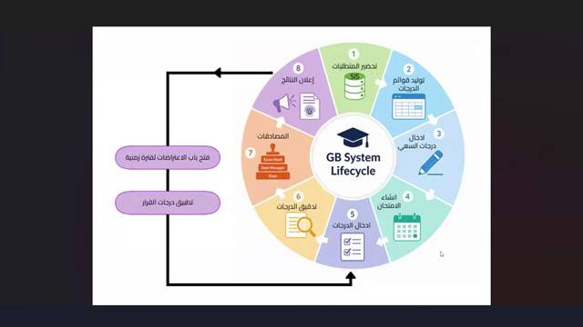
شاشة دورة حياة نظام GB System — الخطوات الثماني الرئيسية للعملية الامتحانية
1.1 ملخص سير العملية الامتحانية
قبل البدء بشرح تفاصيل كل خطوة، فيما يلي ملخص لسير العملية الامتحانية بشكل عام:
1توليد قوائم الدرجات
2تدقيق أسماء الطلاب والمواد
3إدخال درجات السعي
4إنشاء فترة امتحانية
5إدخال درجات النهائي
6التدقيق والمصادقات
7إعلان النتائج
8مرحلة الاعتراضات
ℹ️
يجب إتمام كل خطوة بالترتيب. لا يمكن الانتقال إلى الخطوة التالية قبل إكمال السابقة والمصادقة عليها من الجهة المختصة.
1.2 القائمة الجانبية الرئيسية
توجد على يمين الشاشة قائمة تنقل رئيسية تحتوي على جميع وحدات النظام:
⚠️
الوحدات المتاحة تعتمد على صلاحيات حسابك. إذا لم تجد وحدة معينة في القائمة، تواصل مع مسؤول النظام للحصول على الصلاحيات اللازمة.
2.1 كيفية تسجيل الدخول
للوصول إلى نظام GB System، اتبع الخطوات التالية:
1
افتح المتصفح (يُنصح باستخدام Google Chrome أو Microsoft Edge) وانتقل إلى رابط النظام الذي أرسلته لك الجامعة.
2
في صفحة تسجيل الدخول، أدخل اسم المستخدم وكلمة المرور الخاصة بحسابك الوظيفي.
3
انقر على زر تسجيل الدخول للدخول إلى النظام.
4
بعد الدخول الناجح، ستظهر الصفحة الرئيسية مع إحصائيات العام الدراسي الحالي.
⚠️
في أعلى الشاشة يظهر اسمك الوظيفي ورقم الموظف. تأكد أن المعلومات صحيحة قبل البدء بأي عملية.
2.2 الصفحة الرئيسية والإحصائيات
الصفحة الرئيسية تعرض ملخصاً إحصائياً شاملاً عن الوضع الأكاديمي الحالي:
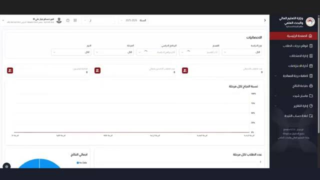
الصفحة الرئيسية — إحصائيات النظام وأعداد الطلاب ونسب النجاح
| العنصر |
الوصف |
| 📊 نسبة النجاح لكل مرحلة |
رسم بياني شريطي يعرض نسبة النجاح لكل مرحلة دراسية (المرحلة الأولى، الثانية، الثالثة، الرابعة) |
| 🍩 إجمالي النتائج |
رسم دائري يوضح توزيع الطلاب (ناجح / راسب / غائب) |
| 👥 عدد الطلاب لكل مرحلة |
إحصاء عدد الطلاب المسجلين في كل مرحلة دراسية |
| 🔍 فلاتر التصفية |
يمكن تصفية الإحصائيات حسب: نوع الدراسة، القسم، البرنامج الدراسي، السنة، المرحلة |
ℹ️
في الجانب الأيمن العلوي من كل شاشة تجد شريط التنقل العلوي الذي يعرض السنة الدراسية الحالية ويتيح التبديل بين السنوات المختلفة (2025-2026، 2024-2025، إلخ).
وحدة إدارة الامتحانات هي المحور الرئيسي للعمل في النظام. من هنا تتحكم في حالة الامتحانات،
تفتح باب الاعتراضات، وتتابع تقدم إدخال الدرجات.
3.1 نظرة عامة على عملية الامتحان
انقر على إدارة الامتحانات في القائمة الجانبية لفتح الشاشة الرئيسية:
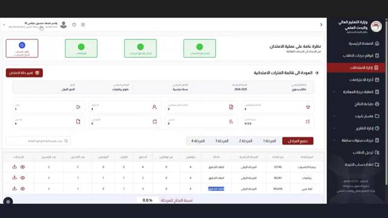
شاشة إدارة الامتحانات — نظرة عامة على الفترات الامتحانية وحالتها
تحتوي هذه الشاشة على:
| العنصر |
الوصف |
| 🔵 شريط تقدم العملية |
يعرض أربع مراحل رئيسية للعملية الامتحانية، كل مرحلة لها لون مختلف: رمادي (لم تبدأ)، برتقالي (قيد التنفيذ)، أخضر (مكتملة) |
| 🔴 تغيير حالة الامتحان |
زر يسمح بتغيير حالة الامتحان إلى مرحلة جديدة |
| 📋 قائمة الفترات الامتحانية |
جدول يعرض جميع المواد والفترات الامتحانية مع حالة كل منها |
| 📊 نسبة النجاح |
نسبة مئوية تعرض تقدم إدخال الدرجات |
| 🔢 أزرار المراحل |
أزرار تصفية: جميع المراحل، المرحلة 1، المرحلة 2، المرحلة 3، المرحلة 4 |
قراءة بيانات جدول الفترات الامتحانية:
| العمود |
المعنى |
| السنة الدراسية |
السنة الأكاديمية المرتبطة بهذه الفترة |
| نوع الدراسة |
صباحي / مسائي |
| البرنامج الدراسي |
اسم البرنامج (هندسة، رياضيات، إلخ) |
| السنة / المرحلة |
رقم المرحلة الدراسية |
| الأيقونات |
أيقونة 👤 لعرض تفاصيل الطلاب |
أيقونة 📄 لعرض الوثائق |
أيقونة 🔔 للإشعارات
|
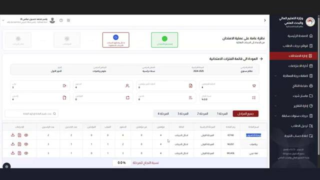
شاشة الفترات الامتحانية — مع تفعيل مرحلتين (إدخال الدرجات والمصادقة)
3.2 تغيير حالة الامتحان
تغيير حالة الامتحان يتيح الانتقال من مرحلة إلى أخرى في دورة حياة النظام.
انقر على زر 🔴 تغيير حالة الامتحان لفتح نافذة التغيير:
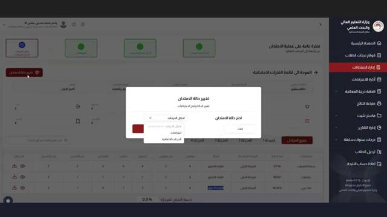
نافذة تغيير حالة الامتحان — اختيار الحالة الجديدة
1
انقر على زر تغيير حالة الامتحان في أعلى الشاشة.
2
ستظهر نافذة
"تغيير حالة الامتحان". من قائمة
"اختر حالة الامتحان" حدد الحالة المطلوبة:
- إدخال الدرجات — لفتح النظام لإدخال درجات الامتحان
- الدرجات الإضافية — لإضافة درجات إضافية
- اعتراضات — لتحويل الحالة إلى مرحلة الاعتراضات
3
انقر حفظ لتطبيق التغيير، أو إلغاء للتراجع.
🚨
تنبيه مهم: تغيير حالة الامتحان يؤثر على جميع المواد في الفترة الامتحانية المحددة. تأكد من صحة اختيارك قبل الحفظ لأن بعض التغييرات لا يمكن التراجع عنها.
3.3 فتح باب الاعتراضات
عند تحويل الحالة إلى اعتراضات، تظهر حقول إضافية لتحديد فترة الاعتراضات:
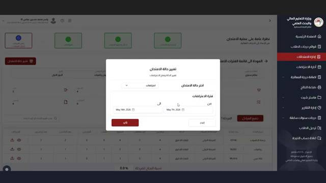
نافذة تحديد فترة الاعتراضات — تحديد تاريخ البداية والنهاية
1
اختر "اعتراضات" من قائمة حالة الامتحان.
2
في قسم
"فترة الاعتراضات"، حدد:
- من: تاريخ بداية قبول الاعتراضات
- إلى: تاريخ انتهاء قبول الاعتراضات
3
انقر حفظ لتفعيل فترة الاعتراضات. سيتمكن الطلاب من تقديم اعتراضاتهم خلال هذه الفترة فقط.
3.4 تصفية الفترات الامتحانية
يمكن تصفية قائمة الفترات الامتحانية باستخدام الفلاتر المتاحة في أعلى الجدول:
| الفلتر |
الخيارات |
| السنة الدراسية |
2024-2025، 2023-2024، وما قبلها |
| نوع الدراسة |
الكل / صباحي / مسائي |
| البرنامج الدراسي |
جميع البرامج أو برنامج محدد |
| القسم |
جميع الأقسام أو قسم محدد |
| المرحلة |
جميع المراحل / مرحلة 1 / 2 / 3 / 4 |
هذه الوحدة هي المكان الرئيسي لإدخال ومراجعة وإدارة درجات الطلاب.
انقر على قوائم درجات الطلاب في القائمة الجانبية.
4.1 الوصول إلى قوائم الدرجات
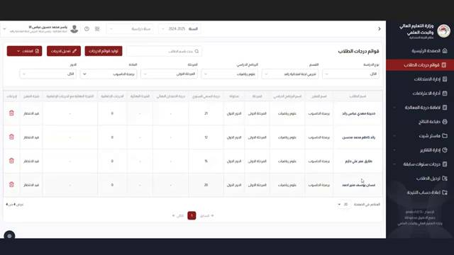
شاشة قوائم درجات الطلاب — عرض جميع قوائم الطلاب
تحتوي هذه الشاشة على ثلاثة أزرار رئيسية في أعلاها:
- 🖨️ طباعة — طباعة القوائم
- ✏️ تعديل الدرجات — الدخول إلى وضع تعديل الدرجات
- 📊 توليد قوائم الدرجات — إنشاء قوائم درجات جديدة
فلاتر التصفية المتاحة:
| الفلتر |
الوصف |
| نوع الدراسة |
صباحي / مسائي |
| القسم |
اسم القسم الأكاديمي |
| البرنامج الدراسي |
اسم البرنامج (هندسة الحاسوب، الرياضيات، إلخ) |
| السنة الدراسية |
2024-2025 أو سنوات سابقة |
| المرحلة |
المرحلة الأولى / الثانية / الثالثة / الرابعة |
| الدور |
الدور الأول |
| البحث باسم الطالب |
بحث سريع باسم الطالب أو رقمه |
4.2 توليد قوائم الدرجات
قبل إدخال الدرجات، يجب توليد قوائم الدرجات للمواد المطلوبة:
1
انقر على زر 📊 توليد قوائم الدرجات في أعلى الشاشة.
2
اختر القسم والبرنامج الدراسي والمرحلة المطلوبة من الفلاتر.
3
سيقوم النظام تلقائياً بإنشاء قوائم الدرجات لجميع الطلاب المسجلين في هذه المواد.
4
بعد التوليد الناجح، ستظهر القوائم في جدول الشاشة الرئيسية جاهزة للإدخال.
⚠️
إذا لم تظهر أي بيانات في الشاشة (ظهرت صورة "عذراً لا توجد بيانات")، فهذا يعني أن قوائم الدرجات لم تُولَّد بعد لهذه المرحلة. انقر على توليد قوائم الدرجات أولاً.
4.3 إدارة الدرجات وإدخالها
بعد توليد القوائم، انقر على أيقونة التعديل بجانب أي مادة للدخول إلى شاشة إدخال الدرجات:
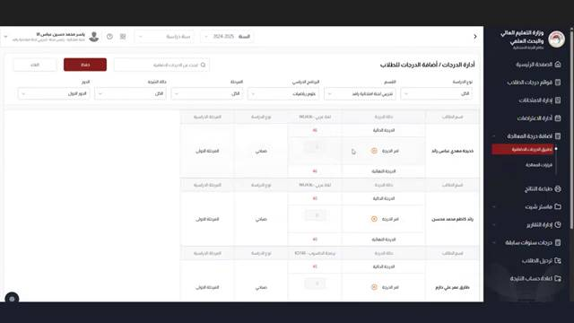
شاشة إدارة الدرجات / إضافة الدرجات للطلاب — قائمة الطلاب بحالاتهم
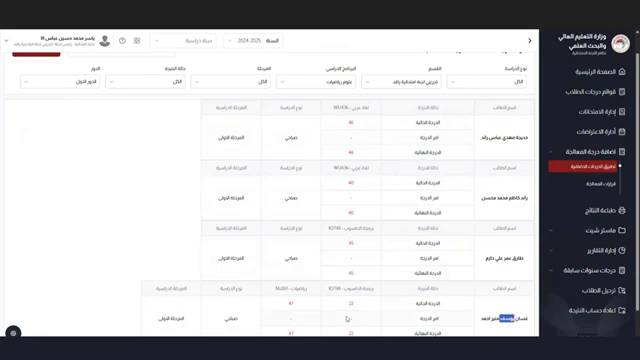
شاشة إدخال الدرجات التفصيلية — درجات كل طالب حسب المادة
هيكل جدول إدخال الدرجات:
| العمود |
الوصف |
| اسم الطالب |
الاسم الثلاثي للطالب |
| الرقم الجامعي |
الرقم الأكاديمي المميز لكل طالب |
| درجة السعي |
درجة الأعمال الفصلية (الاختبارات اليومية، الحضور، الواجبات) |
| درجة الامتحان النهائي |
الدرجة المقدرة من 100 للامتحان النهائي |
| المجموع |
مجموع درجة السعي + درجة النهائي |
| الحالة |
اجتاز رسب غياب |
| أيقونة التحقق |
🟢 أخضر = تم التحقق | 🔴 أحمر = بحاجة مراجعة |
1
من شاشة إدارة الامتحانات أو قوائم الدرجات، انقر على أيقونة ✏️ أو زر تعديل الدرجات بجانب المادة المطلوبة.
2
ستظهر قائمة الطلاب المسجلين في المادة. انقر على اسم الطالب أو أيقونة التعديل لفتح حقول إدخال الدرجة.
3
أدخل درجة الامتحان النهائي في الحقل المخصص. سيحتسب النظام المجموع تلقائياً.
4
انقر على حفظ بعد إدخال كل درجة، أو استخدم حفظ الكل لحفظ جميع الدرجات دفعة واحدة.
5
بعد الحفظ، يتحول مؤشر الطالب إلى 🟢 أخضر ما يعني تسجيل درجته بنجاح.
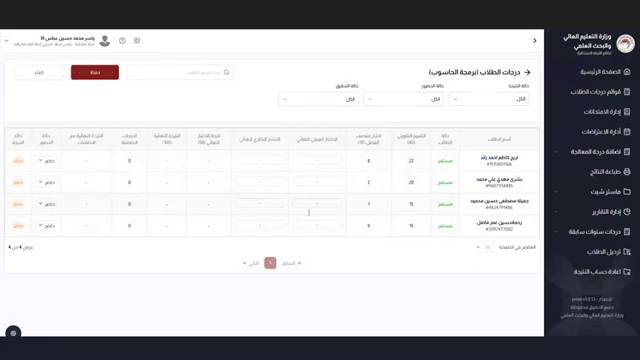
شاشة درجات الطلاب — عرض تفصيلي لدرجات كل طالب في المادة
ℹ️
يمكن تصفية الطلاب حسب: دقة التحقق (محقق / غير محقق) | الحالة (اجتاز / رسب / غياب). هذا يسهّل التركيز على الطلاب الذين لم تُدخَل درجاتهم بعد.
4.4 حالات الطلاب
| الحالة |
المعنى |
الإجراء |
| اجتاز |
الطالب حصل على درجة نجاح |
لا يحتاج إجراء إضافي |
| رسب |
الطالب لم يحقق درجة النجاح |
مراجعة الدرجة والتأكد من صحة الإدخال |
| غياب |
الطالب غاب عن الامتحان |
تأكيد الغياب أو إدخال درجة صفر |
| قيد الانتظار |
لم تُدخَل الدرجة بعد |
إدخال الدرجة في أقرب وقت |
بعد إعلان النتائج وفتح باب الاعتراضات، يتمكن الطلاب من تقديم اعتراضات على درجاتهم.
انقر على إدارة الاعتراضات في القائمة الجانبية لمتابعة هذه الاعتراضات.
ℹ️
تظهر هذه الوحدة الاعتراضات فقط خلال الفترة الزمنية المحددة لقبول الاعتراضات. بعد انتهاء هذه الفترة، تُغلق تلقائياً ولا يمكن تقديم اعتراضات جديدة.
5.1 عرض الاعتراضات
1
انقر على إدارة الاعتراضات في القائمة الجانبية.
2
ستظهر قائمة بجميع الاعتراضات المقدمة، تتضمن: اسم الطالب، المادة، الدرجة الحالية، سبب الاعتراض، وتاريخ التقديم.
3
يمكن تصفية الاعتراضات حسب: القسم، البرنامج، المرحلة، أو حالة الاعتراض (جديد / قيد المراجعة / مُنجز).
5.2 معالجة الاعتراض
1
انقر على الاعتراض المراد معالجته لفتح تفاصيله.
2
راجع ورقة إجابة الطالب والدرجة المدخلة في النظام.
3
إذا كان الاعتراض مقبولاً: عدّل الدرجة في النظام وانقر قبول الاعتراض.
4
إذا كان الاعتراض مرفوضاً: انقر رفض الاعتراض مع كتابة سبب الرفض.
5
سيُحدَّث نظام الطالب تلقائياً بقرار الاعتراض.
⚠️
قبول الاعتراض يُعدّل الدرجة في قاعدة البيانات مباشرةً. تأكد من مراجعة الدرجة الجديدة بدقة قبل الحفظ النهائي.
تُستخدم هذه الوحدة لإدارة قرارات معادلة المواد الدراسية للطلاب المحوّلين أو القادمين من جامعات أخرى.
انقر على إدارة درجة المعادلة في القائمة الجانبية.
6.1 قرارات المعادلة
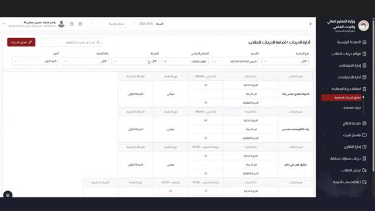
شاشة قرارات المعادلة — قائمة القرارات المسجلة
تعرض هذه الشاشة جميع قرارات المعادلة المسجلة، مع التفاصيل التالية:
| العمود |
الوصف |
| السنة الدراسية |
السنة التي صدر فيها قرار المعادلة |
| رقم الكتاب |
الرقم الرسمي للكتاب/القرار الصادر |
| تاريخ الكتاب |
تاريخ صدور القرار الرسمي |
| عدد المستفيدين |
عدد الطلاب المشمولين بقرار المعادلة |
| عدد المواد المعادَلة |
عدد المواد التي شملها القرار |
| ملف PDF |
الوثيقة الرسمية المرفقة للقرار |
6.2 إضافة قرار معادلة جديد
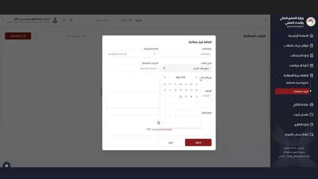
نافذة إضافة قرار معادلة جديد — ملء بيانات القرار
1
انقر على زر + إضافة قرار معادلة في أعلى الشاشة.
2
في النافذة الظاهرة، أدخل البيانات المطلوبة:
- السنة الدراسية: اختر السنة من القائمة المنسدلة
- البرنامج الدراسي: اختر البرنامج المعني
- تاريخ القرار: حدد التاريخ من التقويم
- رقم الكتاب: أدخل الرقم الرسمي للكتاب
- الوصف / الملاحظات: أي تفاصيل إضافية
- ملف PDF: ارفع نسخة من القرار الرسمي
3
انقر إضافة لحفظ القرار في النظام.
4
بعد إضافة القرار، انتقل لتعيين المواد المعادلة والطلاب المشمولين عبر الأيقونات الظاهرة بجانب القرار.
وحدة طباعة النتائج تتيح طباعة شهادات النتائج وكشوف الدرجات الرسمية للطلاب.
انقر على طباعة النتائج في القائمة الجانبية.
7.1 إدارة طباعة النتائج
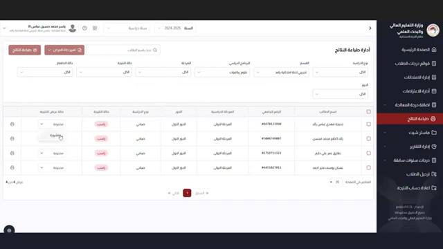
شاشة إدارة طباعة النتائج — قائمة الطلاب وحالات طباعة نتائجهم
تعرض هذه الشاشة:
| العمود |
الوصف |
| اسم الطالب والرقم الجامعي |
معرّفات الطالب |
| البرنامج الدراسي والمرحلة |
القسم والمرحلة الدراسية |
| الدور |
الدور الأول / الثاني |
| حالة الطباعة |
مطبوع أو غير مطبوع |
| تاريخ الطباعة |
متى تمت آخر طباعة لنتيجة هذا الطالب |
| حالة النتيجة |
مبدئية أو رسمية |
7.2 طباعة شهادات الطلاب
1
من شاشة طباعة النتائج، استخدم الفلاتر لتحديد المجموعة المطلوبة (القسم، البرنامج، المرحلة، السنة).
2
لطباعة نتيجة طالب واحد: انقر على أيقونة الطباعة 🖨️ بجانب اسمه.
3
لطباعة نتائج جميع الطلاب دفعة واحدة: انقر على 🖨️ طباعة النتائج في أعلى الشاشة.
4
اختر نوع الطباعة:
- مبدئية: نتائج غير رسمية للمراجعة الداخلية
- رسمية: النتائج النهائية المعتمدة (تحتاج صلاحيات مسؤول)
5
لتحويل النتائج من مبدئية إلى رسمية، انقر على زر ↔️ تغيير النهائي/الرسمي.
🚨
تحذير: الطباعة الرسمية للنتائج لا يمكن التراجع عنها. تأكد من اكتمال جميع الدرجات وعدم وجود اعتراضات مفتوحة قبل طباعة النتائج الرسمية.
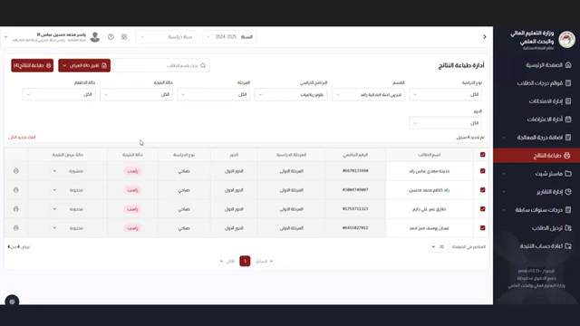
شاشة طباعة النتائج — اختيار السنة الدراسية للطباعة
ماستر شيت هو ملف إكسل شامل يحتوي على جميع درجات الطلاب لفصل دراسي أو سنة بأكملها.
يُستخدم للمراجعة الشاملة والأرشفة.
8.1 استخراج ماستر شيت
1
انقر على ماستر شيت في القائمة الجانبية.
2
حدد المعايير المطلوبة: السنة الدراسية، القسم، البرنامج، المرحلة.
3
انقر على ⬇️ تصدير لتحميل ملف الإكسل الشامل.
8.2 التقارير المتاحة
انقر على إدارة التقارير في القائمة الجانبية للوصول إلى التقارير التالية:
| التقرير |
الوصف |
| 📊 تقرير نسب النجاح |
نسب النجاح والرسوب لكل مادة ومرحلة |
| 📋 تقرير الغيابات |
قائمة الطلاب الغائبين عن الامتحانات |
| 📈 التقرير الإحصائي الشامل |
إحصاءات تفصيلية للعملية الامتحانية بأكملها |
| 📝 تقرير الاعتراضات |
ملخص الاعتراضات المقدمة ونتائجها |
هذه الوحدة مخصصة لإعداد وتنظيم اللجنة الامتحانية وتعيين أعضائها.
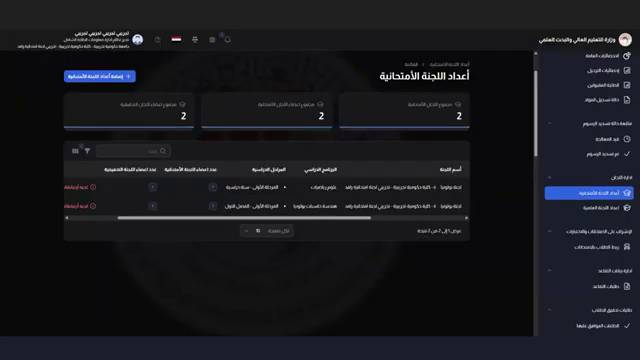
شاشة أعداد اللجنة الامتحانية — عرض أعضاء اللجنة وإحصاءاتهم
9.1 إعداد اللجنة الامتحانية
يجب إنشاء لجنة امتحانية في نظام SIS قبل إنشاء أي فترة امتحانية في نظام اللجنة الامتحانية. للوصول إلى إعداد اللجنة قم بالدخول إلى نظام SIS بصلاحية رئيس القسم أو المستخدم الذي تُسند إليه صلاحية إدارة اللجان الامتحانية ثم اذهب إلى قسم أعداد اللجنة الامتحانية من القائمة الجانبية.
1
تظهر لك قائمة بجميع اللجان الامتحانية المنشأة مسبقاً.
2
انقر على زر + إضافة أعداد اللجنة الامتحانية لإنشاء لجنة جديدة.
3
املأ المعلومات العامة: السنة الدراسية، الفصل الدراسي، الهيكل التنظيمي (القسم العلمي)، البرنامج الدراسي، والمرحلة أو المراحل الدراسية.
4
يتيح النظام إمكانية رفع المستندات الرسمية المتعلقة بتشكيل اللجنة مثل الكتب الرسمية الصادرة بخصوص تشكيل لجان الامتحان والتدقيق لأغراض التوثيق والأرشفة.
شاشة إعداد وتعيين أعضاء اللجنة الامتحانية وتحديد أدوارهم
9.2 تعيين الأعضاء والأدوار والصلاحيات
في قسم أعضاء اللجنة يتم تعيين الأعضاء وتحديد أدوارهم حيث يجب أن تحتوي اللجنة على أربعة أدوار رئيسية يتم تحديدها من القائمة المنسدلة:
| الدور |
الصلاحيات والمهام |
رئيس اللجنة الامتحانية
(واحد على الأقل) |
يملك إدارة كاملة. مسؤول عن إدخال وتعديل الدرجات، إدارة حالات الامتحان، وبدء الموافقات ونقل الحالة إلى التدقيق. |
| عضو اللجنة الامتحانية |
مسؤول عن إدخال وتعديل الدرجات وسجلات الحضور للطلاب. |
رئيس لجنة التدقيق
(واحد على الأقل) |
مسؤول عن مراجعة الدرجات، قبول أو رفض السجلات، وإنهاء عملية التدقيق بالكامل للمادة. |
| عضو لجنة التدقيق |
مسؤول عن مراجعة الدرجات وقبول أو رفض السجلات الفردية للطلاب. |
ℹ️
التسلسل الهرمي للموافقات: تمر الموافقات بثلاثة مستويات:
1. موافقة رئيس اللجنة الامتحانية.
2. موافقة رئيس القسم.
3. موافقة عميد الكلية.
يرى كل مستخدم فقط البيانات التابعة لهيكله التنظيمي.
10.1 درجات سنوات سابقة
تتيح هذه الوحدة الاطلاع على درجات الطلاب من السنوات الأكاديمية السابقة.
مفيدة للمقارنة والمرجعية.
1
انقر على درجات سنوات سابقة في القائمة الجانبية.
2
اختر السنة الدراسية المطلوبة من القائمة المنسدلة (تبدأ من 2015-2016 وحتى الحالية).
3
استخدم فلاتر القسم والبرنامج والمرحلة لتضييق نتائج البحث.
4
يمكن تصدير البيانات عبر زر ⬇️ تصدير.
ℹ️
درجات السنوات السابقة للعرض والاطلاع فقط. لا يمكن تعديلها من هذه الشاشة إلا بموافقة مسؤول النظام.
10.2 توزيع الطلاب
وحدة توزيع الطلاب تُستخدم لتوزيع الطلاب على قاعات الامتحان.
1
انقر على توزيع الطلاب في القائمة الجانبية.
2
حدد المادة والمرحلة والموعد الامتحاني.
3
سيعرض النظام قائمة الطلاب المسجلين مع القاعة المعيّنة لكل طالب.
4
انقر على 🖨️ طباعة لطباعة كشوف التوزيع.
| الزر |
الموقع |
الوظيفة |
| تغيير حالة الامتحان |
إدارة الامتحانات |
تغيير مرحلة الامتحان (إدخال / اعتراضات / إعلان) |
| توليد قوائم الدرجات |
قوائم درجات الطلاب |
إنشاء قوائم درجات فارغة للمواد |
| تعديل الدرجات |
قوائم درجات الطلاب |
الدخول إلى وضع إدخال وتعديل الدرجات |
| طباعة النتائج |
طباعة النتائج |
طباعة شهادات نتائج الطلاب |
| + إضافة قرار معادلة |
إدارة درجة المعادلة |
إضافة قرار معادلة مواد جديد |
| إعادة أعداد اللجنة |
أعداد اللجنة الامتحانية |
إعادة تنظيم أعضاء اللجنة الامتحانية |
| إلغاء |
جميع النوافذ |
إغلاق النافذة دون حفظ أي تغييرات |
تسلسل العمل الموصى به (Workflow)
1. توليد القوائم
2. إدخال درجات السعي
3. إدخال درجات النهائي
4. تدقيق الدرجات
5. المصادقة
6. الاعتراضات
7. إعلان النتائج
✅
احفظ بانتظام: انقر على زر الحفظ بعد كل إدخال مجموعة من الدرجات. لا يحفظ النظام تلقائياً.
✅
تحقق من الفلاتر: قبل أي عملية إدخال، تأكد أن فلاتر القسم والبرنامج والسنة والمرحلة محددة بشكل صحيح.
✅
تابع نسبة الإنجاز: يظهر في أسفل شاشة إدارة الامتحانات "نسبة النجاح للمرحلة" — تأكد وصولها إلى 100% قبل المصادقة.
⚠️
خطأ شائع: إدخال درجة أعلى من الحد الأقصى للمادة. تأكد من معرفة الدرجة القصوى لكل مادة قبل الإدخال.
⚠️
خطأ شائع: نسيان تغيير حالة الامتحان بعد اكتمال إدخال الدرجات. يجب تغيير الحالة يدوياً للانتقال للمرحلة التالية.
🚨
تحذير: لا تشارك كلمة مرورك مع أي شخص. كل إجراء في النظام يُسجَّل باسم المستخدم الداخل حالياً.